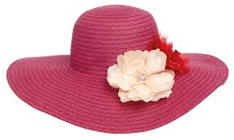

Manvi Garg-portfolio
My hat
Metaphorically speaking I wear many hats throughout my life. Each and everyday I take on very different roles. Everyday I am a sister, a dancer, a student, and a friend. These things are what make me who I am and without my "hats" I don't know where I would be today.
I have one sister that means everything to me and her name is Jessica Lynn. She is 17 and about to graduate from high school. I look up to my sister when times are tough and I know that she always comes to me when she is struggling in life. We are more then just sisters, we are best friends. My sister is always there for me and I give her the same support in return. Me and her are like two pees in a pod. Sometimes we have our differences, but without a doubt we get over it quickly.